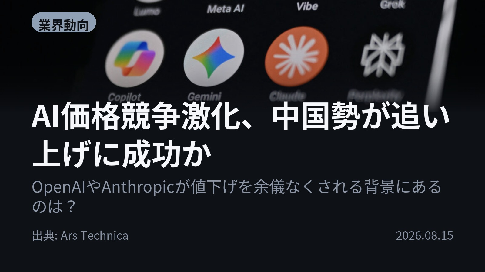
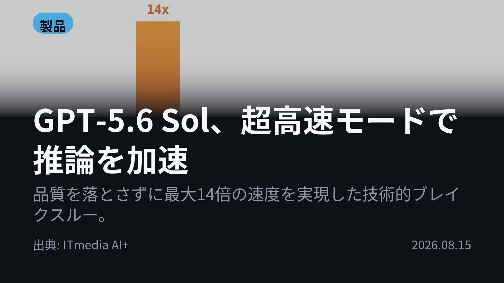
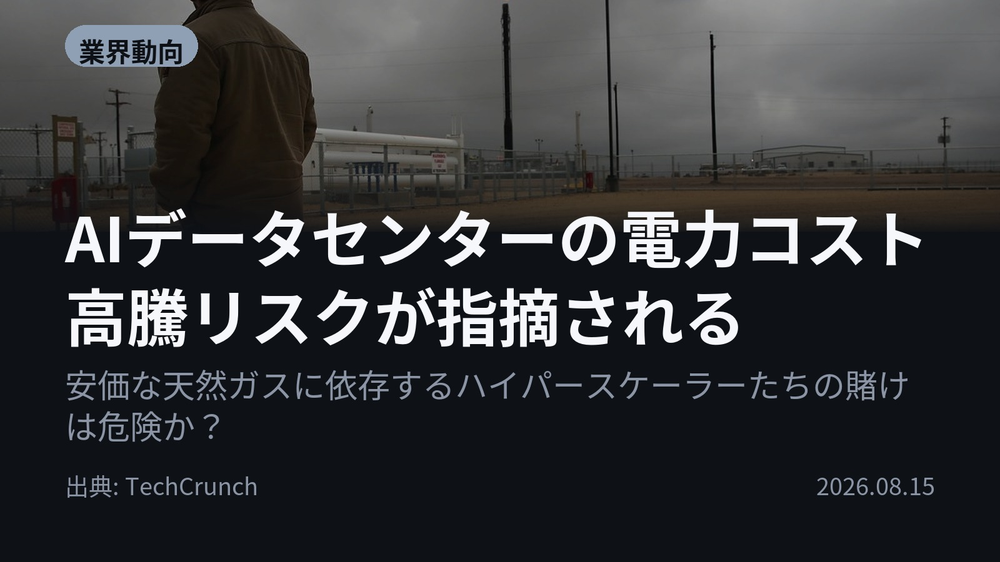
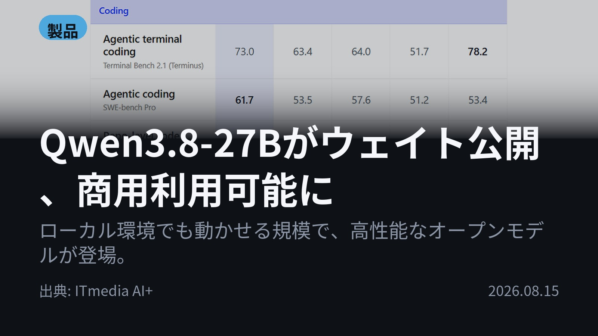
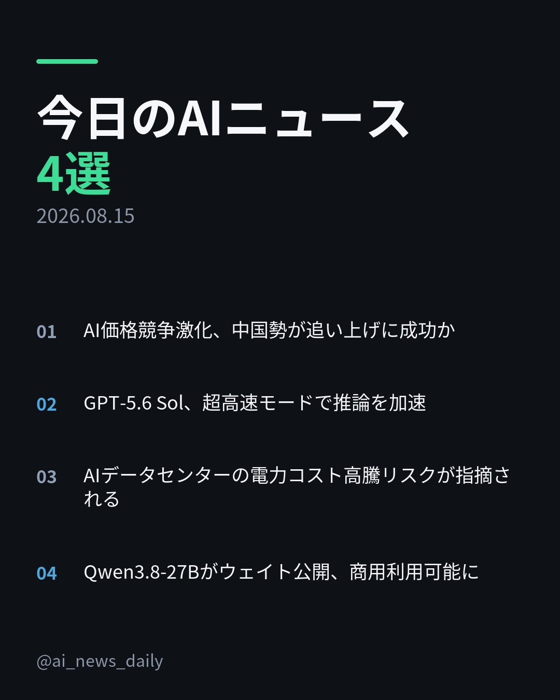
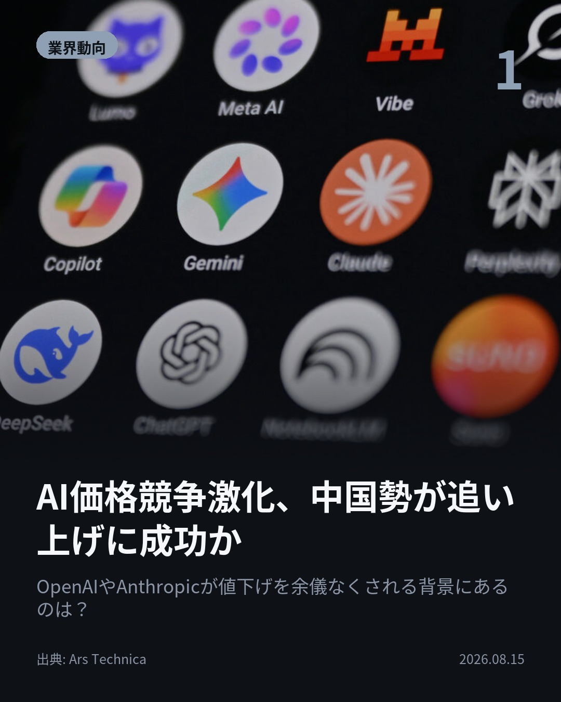
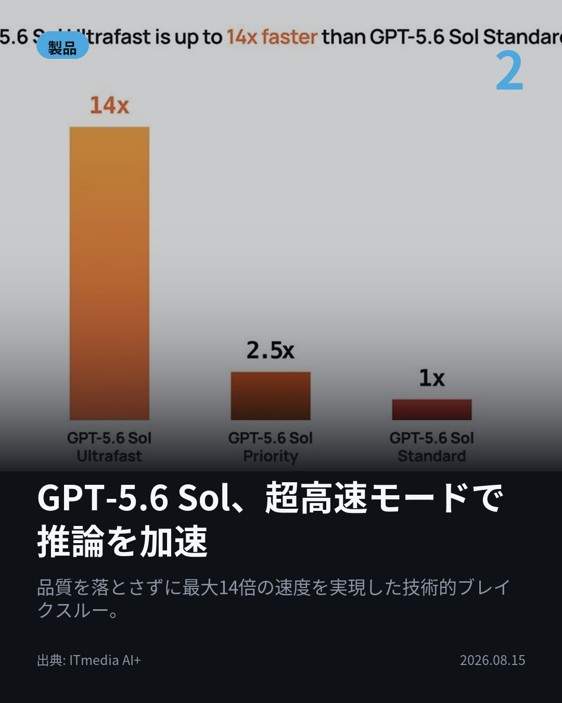
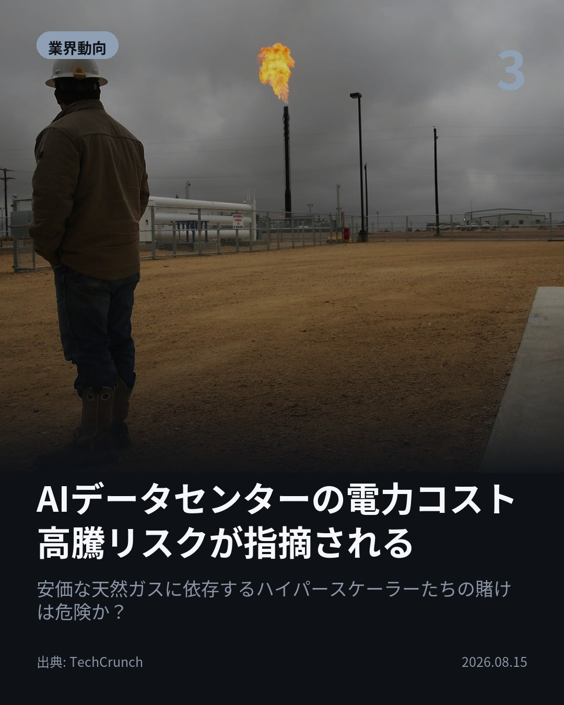
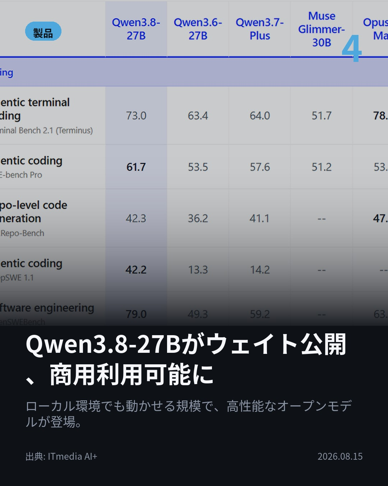

今日のAIニュース 下書き
2026-08-15 生成 08/16 19:30
⚠ 予備のLLM（ollama）で生成されました。
主バックエンドが使えなかったため、原稿の品質が普段より落ちている
可能性があります。いつもより念入りに確認してください。
理由: claude_code: claude -p が失敗しました (exit=1): API Error: Unable to connect to API (ENOTFOUND) / success / stop_sequence
⚠ ファクト照合で要確認の項目があります。
各ニュースの警告を確認してから投稿してください。
X（4投稿）
AI価格競争激化、中国勢が追い上げに成功か
原題: OpenAI and Anthropic in price war as Chinese AI rivals gain ground

AI市場で「価格戦争」が激化しています。 OpenAIやAnthropicなどの米大手ラボは、中国勢の低価格モデルに対抗するため、大幅な値下げを余儀なくされています。 性能競争からコスト競争へ軸足が移り、今後のAI利用の常識が変わるでしょう。 #生成AI #OpenAI（出典: Ars Technica）
重み 259 / 280（見た目 150字）
要確認:
［固有名詞］Technica — この語が本文に見つかりません
{kind=link}
GPT-5.6 Sol、超高速モードで推論を加速
原題: GPT-5.6 Solの「超高速モード」ついに実装 「品質損なわず14倍高速」うたう

GPT-5.6 Solが「超高速モード」を実装しました。 品質を損なうことなく、推論速度を最大14倍に加速させることが可能になりました。 データ転送のボトルネック解消により、即時性が求められる業務への活用が進むでしょう。 #AI #GPT5（出典: ITmedia AI+）
重み 236 / 280（見た目 134字）
{kind=link}
AIデータセンターの電力コスト高騰リスクが指摘される
原題: Hyperscalers might regret embracing natural gas if new forecast proves correct

ハイパースケーラーの「天然ガスへの賭け」は危険信号？ AIデータセンターが安価な天然ガスに依存する構造が、将来的な電力コスト高騰リスクを抱えています。 エネルギー源の安定性が、今後のAI開発の大きなボトルネックになりそうです。 #テクノロジー #データセンター（出典: TechCrunch）
重み 270 / 280（見た目 143字）
要確認:
［固有名詞］ハイパースケーラー — この語が本文に見つかりません
［固有名詞］データセンター — この語が本文に見つかりません
［固有名詞］エネルギー — この語が本文に見つかりません
［固有名詞］ボトルネック — この語が本文に見つかりません
{kind=link}
Qwen3.8-27Bがウェイト公開、商用利用可能に
原題: 「Qwen3.8-27B」ウェイト公開 一部「Opus 4.6 Max」超えか ライセンスは商用可のApache 2.0

ローカル環境で動かせる高性能オープンモデルが登場。 Alibaba Cloudが「Qwen3.8-27B」をウェイト公開。商用利用可能なApache 2.0ライセンスです。 中国発の強力なオープンモデルが、業界の競争激化を加速させます。 #AI #Alibaba（出典: ITmedia AI+）
重み 234 / 280（見た目 145字）
{kind=link}
Instagram（カルーセル 6枚）
{kind=link}

1. 表紙
{kind=link}

2. ニュース
{kind=link}

3. ニュース
{kind=link}

4. ニュース
{kind=link}

5. ニュース

6. CTA
今日のAIニュースは「価格」と「ローカライズ」がキーワード。米大手から中国勢まで、モデルの提供方法やコスト構造が一気に変化しています。 1. OpenAIやAnthropicなどの主要な米国ラボの間で激しい「価格戦争」が発生中。中国発の低価格モデルに押され、大幅な値下げを余儀なくされています。(Ars Technica) 2. GPT-5.6 Solが「超高速モード」を実装し、推論速度を最大14倍に加速させました。データ転送のボトルネック解消により、即時性が求められる業務での活用が進みます。(ITmedia AI+) 3. AI開発に必要な電力コストについて警鐘が鳴り響いています。ハイパースケーラーが天然ガスに依存する構造は、将来的な価格高騰リスクを抱えているようです。(TechCrunch) 4. Alibaba Cloudから「Qwen3.8-27B」のウェイトが公開され、商用利用可能なApache 2.0ライセンスで提供されました。ローカル環境でも動かせる高性能オープンモデルが登場です。(ITmedia AI+) AI業界は今、「最高の性能」だけでなく「最も安く」「どこでも使える」という実用的な側面が重視されています。この流れを理解することが、今後の技術選定の鍵となるでしょう。 今日のまとめが役に立ったら、ぜひ保存して後で見返してください！ #AI #生成AI #人工知能 #テクノロジー #ChatGPT #Claude #OpenAI #Alibaba #Qwen #GPT5 #モデル開発 #価格競争 #データセンター #電力コスト #オープンソース #TechCrunch #ArsTechnica #ITmedia #LLM #AI活用 #MachineLearning #DeepLearning
772字（Instagram上限 2,200字）
この日の選定理由
AI価格競争激化、中国勢が追い上げに成功か
主要米国のAIラボと新興の中国モデルの間で繰り広げられる「価格戦争」は、今後のAI市場構造を大きく変える可能性があり、非常に重要です。
GPT-5.6 Sol、超高速モードで推論を加速
AIモデルの「性能」だけでなく、「処理速度」という実用的な側面から大きな進歩が報告されています。エージェント活用など、即時性が求められる分野で重要です。
AIデータセンターの電力コスト高騰リスクが指摘される
AI開発のボトルネックになりつつある「エネルギー」という物理的な側面から、業界の持続可能性を問う視点を提供しています。コスト構造全体の見直しが迫られています。
Qwen3.8-27Bがウェイト公開、商用利用可能に
中国発の強力なオープンモデルが具体的なベンチマークスコアを提示し、競争激化の一端を示しています。特にライセンス面での柔軟性が注目されます。